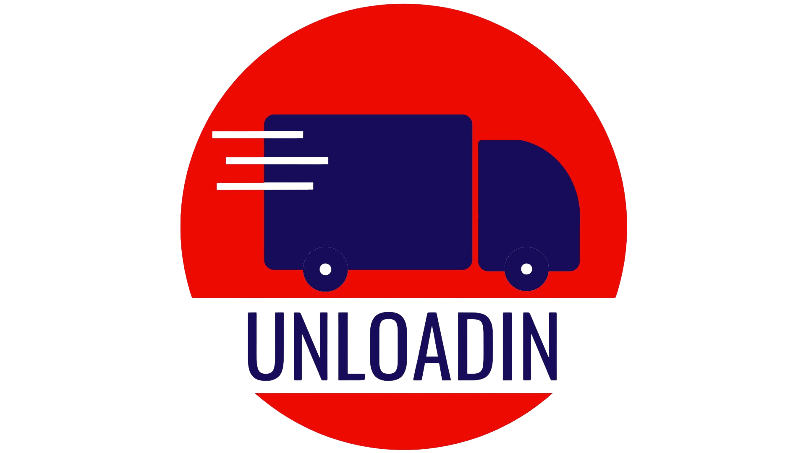

Terms of Service | Data Deletion Policy
Legal Entity: UNLD TECH LABS PRIVATE LIMITED
© 2025 All rights reserved Unloadin
"UNLD Tech Labs Private Limited" or, "UNLOADIN" is a company which is, inter alia, engaged in the business of transportation of goods by road.
1. Consignments entrusted to UNLD Tech Labs Private Limited (UNLOADIN) by you (hereinafter referred to as Consignor/Sender/Customer as the case may be) for the purposes of availing transportation services shall be on agreed terms and conditions as specified below.
2. It is hereby clarified that Consignor/Sender/Customer shall mean, without limitation, any individual, proprietary concern, company, firm, association, organization etc. availing UNLOADIN's services. For the purpose of this terms and conditions, any Consignor/Sender/Customer availing UNLOADIN's Transportation of Goods by Road services for enterprises (UNLOADIN for Enterprise / PFE) and specifically registered with UNLOADIN for the same, having duly filled and submitted the enrolment form, shall be referred to as an Enterprise Customer.
3. The Consignor/Sender/Customer (as the case may be) acknowledges that, by using the UNLOADIN mobile application (Application) and services (specified below), you have read and understood the UNLOADIN Customer Terms and Conditions (Terms and Conditions) and agree to be bound by these Terms and Conditions. If the Consignor/ Sender/ Customer opts not to agree to these Terms and Conditions or does not wish to avail the services provided by UNLOADIN, they should uninstall the Application from their mobile phones and discontinue the use of UNLOADIN's services. Each time that the Consignor/ Sender/ Customer uses UNLOADIN's services, the Consignor/ Sender/ Customer agrees to be bound by the Terms and Conditions.
4. These Terms and Conditions apply to the services provided by UNLOADIN currently, including the following services: 4.1) Transportation of Goods by Road (transportation of goods by road); and 4.2) Packers and Movers (transportation of goods by road from one location to another including collection of household goods from pre-defined place, packaging of goods, transportation and unloading of the goods at the place of destination).
5. In addition to the General Terms and Conditions, the Consignor/Sender/Customer (as the case may be) shall be subject to the specific terms and conditions of Transportation of Goods by Road and Packers & Movers below, depending on the services availed by them.
6. The Consignor/Sender/Customer acknowledges that certain services available on the Application are offered by UNLD Tech Labs Private Limited and/or third parties, including UNLOADIN's affiliates (Third Party Services). Should you wish to avail such Third Party Services, you shall be bound by the relevant terms and conditions of such Third Party Services (Third Party Terms and Conditions) which are in addition to these Terms and Conditions and your use of any Third Party Services shall be deemed to be your unconditional acceptance of the Third Party Terms and Conditions. Each of the Third Party Service Providers shall issue invoices directly to the Consignor/Sender/Customer for the respective Third Party Services, and UNLOADIN shall not be responsible for issuance of such invoices unless expressly agreed otherwise.
7. UNLOADIN and/or its affiliates may, from time to time, introduce additional services which shall be governed by separate terms and conditions as may be made available from time to time on the Application or elsewhere. You may avail such new services upon accepting the relevant terms and conditions as may be applicable and any use of such additional services shall be deemed to be your acceptance of the relevant terms and conditions. Additionally, UNLOADIN and/or its affiliates reserve the right to modify, cancel, or discontinue any service(s), at its sole discretion, without any prior notice.
8. You accept and agree that UNLOADIN has been appointed as the collection agent of UNLD Tech Labs Pvt Ltd for collection and recovery of amounts due to UNLD Tech Labs Pvt Ltd. Should you avail any services offered by UNLD Tech Labs Pvt Ltd, UNLOADIN may recover amounts due to UNLD Tech Labs Pvt Ltd as its designated collection agent and you hereby accept and agree to such collection of amounts by UNLOADIN on behalf of UNLD Tech Labs Pvt Ltd.
9. The Consignor or Sender or Customer (as the case may be) warrants and undertakes that all Consignments in respect of which UNLOADIN is to provide its services are either owned by the Consignor or Sender or Customer (as the case may be) or legally in their possession or under their control, and that the Consignor or Sender or Customer (as the case may be) is able to deal with the Consignments as contemplated herein. The Consignor or Sender or Customer (as the case may be) agrees to indemnify UNLOADIN against any loss, damage or claim made against UNLOADIN arising from any lack of authority of the Consignor or Sender or Customer (as the case may be) to contract with UNLOADIN for the Services, or any breach of the warranty or undertaking given by the Consignor or Sender or Customer (as the case may be) under this paragraph.
UNLOADIN may vary or amend or change or update these Terms and Conditions, from time to time entirely at its own discretion. You shall be responsible for checking these Terms and Conditions from time to time and ensure continued compliance with the terms and conditions. The continued use of UNLOADIN's services by the Consignor or Sender or Customer (as the case may be), after any such amendment or change in the Terms and Conditions shall be deemed as your express acceptance to such amended/changed terms and you also agree to be bound by such changed/amended Terms and Conditions. You agree that UNLOADIN's services are subject to all prevailing statutory taxes, duties, fees, charges and/or costs, however denominated, as may be applicable from time to time. It shall be your responsibility to ensure that you comply with applicable laws, including, without limitation, on payment of taxes and pay the prevailing charges and duties which shall form part of the invoice raised by UNLOADIN.
10. In accordance with the Consumer Protection (E-Commerce) Rules, 2020, the details of the Grievance Officer/ Nodal Officer are as below:
Shritheja
UNLD Tech Labs Private Limited
No. 34, GSJ Royal, Gopalpura Ward
Santhekatte, Udupi, KA 576105
Email ID: admin@unloadin.com
Phone No: 8951504411
Time: Monday to Friday (9:00 to 17:00)
11. These Terms and Conditions shall be governed by the laws of India and subject to the mediation clause specified hereunder, the courts in Bangalore shall have exclusive jurisdiction to deal with any matter pertaining to these Terms and Conditions. Any disputes between UNLOADIN and Consignor or Sender or Customer (as the case may be) or anybody claiming through or on behalf of the Consignor/Sender/Customer (Disputing Parties) that cannot be settled amicably between the parties within a period of 30 (thirty) days from the date of the dispute may be resolved by mediation in accordance with the Karnataka Civil Procedure (Mediation) Rules, 2005 before the Karnataka Mediation Centre, Bangalore (Institution). A neutral mediator shall be appointed by the Institution to facilitate the mediation process. The Disputing Parties shall keep the mediation confidential and not disclose to any person, unless required to do so under applicable law.
12. Any claim (for accidents or negligence resulting in damage) in respect of the goods shall be made in writing within 24 (twenty four) hours from the date of receipt and sent to admin@unloadin.com for Transportation of Goods by Road services.
13. In case of damaged goods, the Consignor/Customer (as the case may be) and / or consignee needs to share photos of the damaged goods, in case of Transportation of Goods by Road services, and damaged packaging, in case of Packers and Movers services, along with the description of the damage. In absence of any such claims, made within the period stipulated here, UNLOADIN shall not be liable to process the same.
14. When claiming refund against damage, the Consignor/Customer must verify their identity as the original Consignor/Customer of the goods. UNLOADIN may ask for relevant information to validate the identity of the claimant in this case. In case the identity of the claimant cannot be validated by UNLOADIN, the refund request will not be processed.
15. For 'Transportation of Goods by Road', UNLOADIN shall be liable for any loss or damage to the goods directly attributable to UNLOADIN or its agents only to the extent of ten times the freight amount paid or payable, provided the amount so calculated shall not exceed the value of the goods.
16. The Consignor/Customer hereby undertakes and agrees that, should they so desire, they shall opt for additional coverage to secure the goods from point of origin to point of final destination at their own cost; provided, for any goods above the value of INR 1,500 (Rupees One Thousand Five Hundred in case of transportation of goods by two-wheeler and INR 5,000 (Rupees Five Thousand) for transportation of goods by three and four wheeler, the Consignor/Customer will necessarily obtain insurance coverage from point of origin to point of final destination at their own cost.
17. UNLOADIN shall have the right, at its sole discretion, to engage third-party service providers for the performance of the entire / part of the Services. The same does not alter the contractual relationship between UNLOADIN and the customer. UNLOADIN shall remain responsible for ensuring that the services are performed in accordance with these Terms and Conditions.
18. No commitment is made for time bound completion of service. Any time of arrival provided at booking / completion of Service is an estimate only and, there may be occasional delays for reasons outside UNLOADIN's control. UNLOADIN shall not be liable for any loss arising from such delays.
19. The Customer shall specify the accurate details of the goods at the time of booking, including nature of goods, quantity, volume, specifications etc.
20. Reverse liability: In the event of mis-declaration of the goods (including without limitation where the goods are already damaged or damage other goods while under carriage or are illegal goods/ consignment) the Consignor/Customer shall be liable for any damages related to such mis declared goods including consequential and third party damages.
21. Void liability: In the event of mis-declaration of the goods, UNLOADIN shall not be liable for any claims on compensation or the logistics-related costs or charges or the declared value of goods nor statutory or legal responsibilities of such goods.
22. Under no circumstances will UNLOADIN or any of its directors, officers, employees, agents or contractors be liable to the Consignor/Customer or consignee for any indirect, incidental, consequential, special or exemplary losses or damages for insufficient provision of services, for any reason whatsoever. More particularly, UNLOADIN shall not be liable for any loss of income, profits, interests or other consequential losses.
23. Refund Period: All eligible refunds shall be processed within 7 – 10 working days from the day the claim has been accepted by UNLOADIN upon submission of complete documents pertaining to the dispute by the Consignor/Customer, except where such refund cannot be processed due to reasons not attributable to UNLOADIN.
24. Freight & Invoicing
The Freight, as determined by UNLOADIN, shall be displayed to the customer at the time of booking, and the customer's confirmation of the booking shall constitute acceptance of such freight. The Freight displayed and accepted at the time of booking is indicative, the final Freight shall be subject to variations based on factors such as actual distance travelled, duration of the trip, waiting time, and any other applicable charges, etc. The final Freight calculation will reflect these variations and will be communicated to the customer in the Application and on the Invoice upon the completion of service. UNLOADIN shall issue an invoice-cum-consignment note or bill of supply-cum-consignment note, as applicable, upon completion of the transportation Services. GST, where applicable, shall be payable by the consignor/customer under RCM for the transportation services. The consignor/consignee shall remain solely and absolutely liable for payment of such tax. Any other taxes, duties, levies or statutory charges applicable under law shall be solely borne and discharged by the consignor/consignee.
25. Duties and Taxes
UNLOADIN is a "goods transport agency" (GTA) under the Central Goods and Services Tax Act, 2017 (GST) and has opted for tax on reverse charge mechanism (RCM). Accordingly, in case the Consignor/Customer falls under the specified category, the Consignor/Customer is liable to obtain registration and pay the GST at the rate of 5% or the rate applicable under the Central Goods and Services Tax Act, as amended from time to time under RCM on the invoices raised by UNLOADIN. Where the Consignor/Customer is registered under the GST regulations, the same should be intimated to UNLOADIN through the Application. The Consignor shall be liable for the preparation and/or generation of the E-way bill and it shall be the sole responsibility of the Consignor to ensure that all the details provided in such E-way bill are true and/or accurate. UNLOADIN shall not be responsible for actions of the authorities due to misdeclaration.
26. Notwithstanding any other remedy available to UNLOADIN, UNLOADIN shall have a lien over all goods/ consignments in its possession or under its control in respect of any sums due to UNLOADIN by the Consignor. UNLOADIN undertakes the responsibility to transport the goods safely in accordance with the agreed terms, subject to payment of consideration and compliance by the Consignor with these Terms and Conditions. If the consignee does not accept the consignment due to any reason, the Consignor shall still be liable to pay freight charges and all other dues and charges to UNLOADIN. In case the transportation of goods is not completed within 48 (forty eight) hours from the date of tendering the consignment for transportation, then demurrage / warehouse charges at such rates as may be fixed by UNLOADIN from time to time shall apply. If the consignment is not received or claimed within 7 days from the date of tendering, UNLOADIN shall have the right to proceed with the sale of the goods to realize all its dues.
27. The Consignor/Customer maybe contacted by UNLOADIN for furnishing additional details required to process compensation towards loss or damage of the goods. UNLOADIN will not be liable for payment of any compensation if the details requested are not provided within 2 working days from the date on which the initial e-mail request is sent.
28. Blocking of access: The Consignor/Customer acknowledges that UNLOADIN may deny its services, in whole or in part, at any time and for any reason, at UNLOADIN's sole discretion, without prior notice or liability. UNLOADIN may restore access at its sole discretion.
29. Cash Payment Term: If Consignor/Customer has opted for cash payment option, the full amount must be paid to the driver partner as reflected on the Application at the time of completion of the services. In case of non payment/ deficit payment, UNLOADIN shall be entitled to levy additional charges, adjust/deduct amounts in the UNLOADIN Wallet, suspend the customer's account or take legal actions.
30. Cancellation: All cancellations made after transport vehicle allotment may incur a cancellation fee basis UNLOADIN's policies.
31. Discrepancy in Invoice Value: Any discrepancy in invoice value should be brought to the attention of UNLOADIN within 7 days from completion of transaction.
1. The following terms and conditions relate to the Transportation of Goods by Road services provided by UNLOADIN. Consignors availing these services agree to be bound by these terms and any other general or specific terms and conditions notified by UNLOADIN from time to time.
2. Consignors should adhere to following packaging instructions: 2.1. Cover the goods completely, securing the ends with tape. 2.2. For fragile items, cover in bubble wrap ensuring corners and edges are well protected. 2.3. Use stretch wrap for items that might shift. 2.4. For items in a box, fill the void with crumpled paper; for fragile items, layer the bottom with cushioning material. 2.5. Use strong tape designed for shipping while sealing. 2.6. Avoid using string instead of tape.
3. The Consignor understands that using UNLOADIN's services for sending fragile items is at Consignor's own risk. UNLOADIN shall not be liable for any damage caused to goods due to poor packaging by the Consignor.
4. The Consignor warrants that they are the owner or the authorized agent of the owner of the goods transported and is authorised to accept these Terms and Conditions.
5. The Consignor is required to fill out all accurate particulars of consignment and trip details into the Application while booking; these details constitute the 'Goods Forwarding Note'.
6. UNLOADIN shall, upon receipt of the Goods Forwarding Note, issue a Goods Receipt/ Consignment Note to the Consignor before the commencement of the transportation.
7. The Consignor shall be solely responsible for the goods transported, including the nature, type, condition, and legality of such goods. The Consignor warrants that the description of the consignment in the Application conforms accurately to the actual content and such consignment does not form part of the Restricted Items. If the consignment contains any such items, the Consignor agrees to take full responsibility and fully indemnify UNLOADIN and/or its agents.
8. All consignments are on a "said-to-contain" basis. The Consignor shall make proper, true, fair, correct and factual declaration regarding description and value of the consignment.
9. At the time of booking, the Consignor will be required to provide a declaration stating the value of the consignment and the description of materials and the same shall be binding on the Consignor.
10. UNLOADIN will use the Consignor and consignee's information to update and inform them through SMS, push notifications, WhatsApp and/ or email regarding the status of the consignment and obtain feedback. UNLOADIN may use the Consignor's behavioral information for internal analysis and targeted marketing.
11. Consignor agrees to indemnify and hold UNLOADIN and its agents harmless for any loss, damages, costs, expenses, penalties, fines, liabilities due to any acts or omissions, breach of applicable law and/ or customer/ third party claims attributable to the Consignor.
12. The Consignor shall not book any consignment containing Restricted Items including but not limited to: Pornographic Materials, Dry Ice, Human Body Parts, Explosives, Fire Arms, Flammables, Livestock, Pets & Animals, Dangerous Goods, Hazardous Goods, Illegal Goods, Radioactive Materials, Precious Jewelleries, Currencies & Coins, Stones and Gems, Gambling Devices, Lottery Tickets, Fire Extinguishers, Cigarettes & Alcohol, Narcotics and Illegal Drugs. The list may be updated from time to time.
13. Consignors will not hand over any secure documents/articles including education certificates, passport, Aadhar Cards, bank statements, credit/debit cards, cheques, currency, etc. (Restricted Documents/Articles). UNLOADIN is not licensed to carry Restricted Documents/Articles and shall have no liability in such cases.
14. In the event the Consignor requests transportation by misrepresentation of any illegal or prohibited items, UNLOADIN or its agent have the right to report the same to the law enforcement authorities. UNLOADIN has a zero tolerance policy towards misuse of its services.
15. Consignor is required to provide the accurate destination address(s) for all locations at the time of booking. For multi-stop feature, this includes every pickup and drop-off point.
16. UNLOADIN reserves its right to refuse the booking of any consignment without assigning any reason.
17. If during transit police or other law enforcement agencies demand display of the items for verification, the driver partner shall display the consignment to such authorities. The Consignor undertakes to indemnify UNLOADIN for any penalties/fines levied due to acts of the Consignor contrary to applicable laws.
18. When loading the vehicle, the Consignor agrees not to exceed the weight and size details specified at the time of booking. UNLOADIN has the right to reject any goods which exceed the weight and size specified at the time of booking.
19. The consignee should be available at the drop-off location at the time communicated. In the event the consignee is not available or refuses to accept the goods, the Consignor will be contacted. Consignments may be returned or disposed of as deemed practical by UNLOADIN. UNLOADIN reserves the right to levy demurrage/incidental charges for extended storage.
20. Consignments cannot be dropped at PO boxes or postal codes. Consignments are transported to the consignee's address as provided. We do not provide door step services.
21. If the Consignor opts for ancillary services such as loading-unloading ("Load Assist"), the Consignor will be charged additionally by including it in the freight.
22. UNLOADIN may provide load assist services in some territories. If the Consignor avails such services, Consignor shall ensure that they or an authorised person shall be present at the time.
23. If you choose Load Assist: Packaging, Assembly-Disassembly, Dismantling & Rope Pulling are not included. Technical Assistance are not included. Goods heavier than 50 kg or that cannot be lifted by 2 persons cannot be moved using this service.
24. UNLOADIN shall not be liable for any deficiency in the transportation services, including delay, non-fulfillment, loss or damage caused on account of act of God, force majeure, war, epidemics, pandemics, strikes, embargoes, riots, political disturbances, accidental fire, accident of vehicle, arrest, restraint or seizure under legal process, or any cause reasonably beyond the control of UNLOADIN.
25. Directors, owners, partners and shareholders of UNLOADIN shall not be personally liable for any claims or liabilities arising out of service failures.
26. Part Truck Load terms: In case of any deviation in charges, a revised quotation will be provided. Consignors shall ensure that the consignment shall not exceed a cumulative weight of 3,000 kg. Cancellation once the vehicle is allocated may incur a cancellation fee. UNLOADIN does not provide packaging services. The Consignor shall be required to clearly identify, label, and demarcate each item. UNLOADIN shall allocate the vehicle as deemed fit at its sole discretion. Payment shall be made by the Consignee directly to the driver partner upon completion. Any incorrect transportation or receipt of goods belonging to another person shall be informed to UNLOADIN within 48 hours of receipt.
27. UNLOADIN for Enterprise: Enterprise Customers shall enroll by filling and submitting the enrolment form and register on the Application. Enterprise Customers shall provide names, mobile numbers and other details of personnel who may avail services on their behalf. UNLOADIN may allow certain Enterprise Customers to avail PFE services up to a mutually agreed amount with consolidated payment. All actions taken through the Enterprise Customer's account or using registered mobile numbers shall be deemed authorised by the Enterprise Customer. Enterprise Customers grant UNLOADIN a limited right to use their name, trademarks, logo for marketing and advertising. UNLOADIN may suspend the Enterprise Customer's account in case of failure to pay any fees. Enterprise Customers shall not assign or transfer any rights/obligations without prior written consent of UNLOADIN.
UNLD Tech Labs Private Limited ("UNLOADIN") respects your privacy and is committed to protecting your personal data. This Data Deletion Policy outlines how you can request deletion of your personal information from our systems.
As a user of UNLOADIN services, you have the right to request deletion of your personal data that we have collected and stored. This includes data collected through our mobile application, website, and any other platforms we operate.
Upon request, we can delete the following types of personal data:
Please note that certain data may need to be retained for legal, regulatory, or business purposes, including:
Even after deletion, some anonymized or aggregated data may be retained for analytical purposes, which cannot be used to identify you personally.
To request deletion of your personal data, please follow these steps:
If you wish to temporarily stop using our services without permanently deleting your data, you can request account deactivation instead. Contact us at admin@unloadin.com for this option.
If your data has been shared with third-party service providers, we will request them to delete your data as well. Their deletion timelines may be subject to their own policies.
UNLOADIN services are not intended for users under 18. If we become aware that we have collected data from a child under 18, we will take immediate steps to delete such information.
© 2025 UNLOADIN Pvt. Ltd. A-34, GSJ Royale, Gopalpura Ward, Santhekatte, Udupi – 576105, Karnataka
CIN: U70200KA2025PTC206956 | Email: admin@unloadin.com | Phone: 9901331882